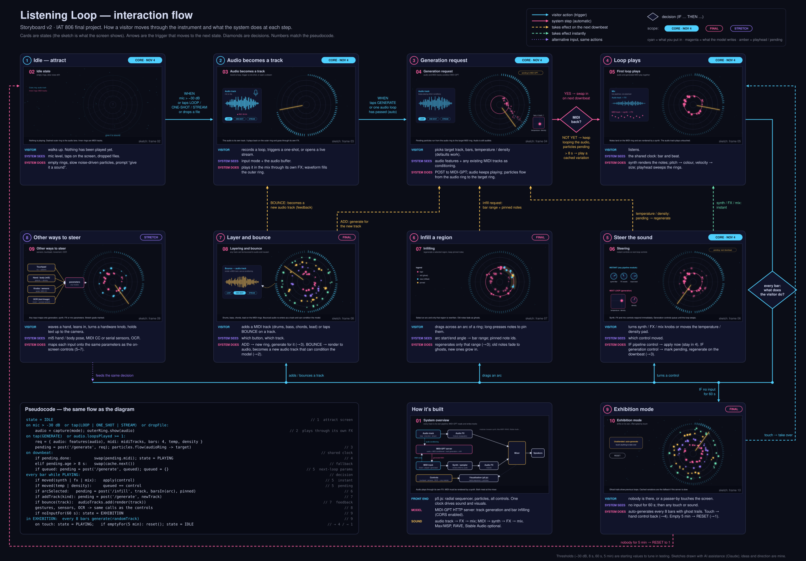

Final Project Storyboard v2 — Listening Loop
Version 2 · interaction flow
Version 1 was a row of ten frames. It showed each screen, but not what moves a visitor from one screen to the next or where the experience branches. Version 2 is one diagram that tells the story of the interaction and the interface at the same time.

How to read it
- Cards are states. Each has a sketch of the screen and three lines: what the visitor does, what the system sees, and what the system does.
- Arrows are triggers. Each arrow names the action or condition that moves to the next state.
- Diamonds are decisions. One checks whether MIDI came back from the model. The other runs every bar while the loop plays and asks what the visitor did.
- Line style is timing. Generation changes wait for the next downbeat (amber dashed). Synth, FX and mix changes apply instantly (green dashed).
- Pseudocode follows the same flow, numbered to match the cards.
The flow
- Main path: idle → audio becomes a track → generation request → the loop plays.
- The loop: every bar, the visitor can steer the sound, infill a region, or layer and bounce tracks. Each branch returns to the state it re-enters. Bouncing sends a track back in as new audio, which closes the feedback loop.
- Other inputs: gestures, sensors and OCR feed the same decision. They are other ways to trigger the same actions.
- Exhibition: after 60 s with no input the piece plays itself. A touch hands control back. After 5 min with nobody there, it resets.
Scope
- Core (midpoint demo, Nov 4): states 1–5, with one control.
- Final: infilling, layering and bounce, exhibition mode.
- Stretch: other inputs (sensors, hand tracking, OCR).
The thresholds (−30 dB, 8 s, 60 s, 5 min) are starting values to tune in testing.
AI use
The diagram and sketches were drawn with AI assistance. The idea and direction are mine.